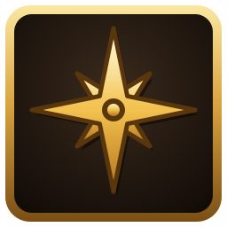
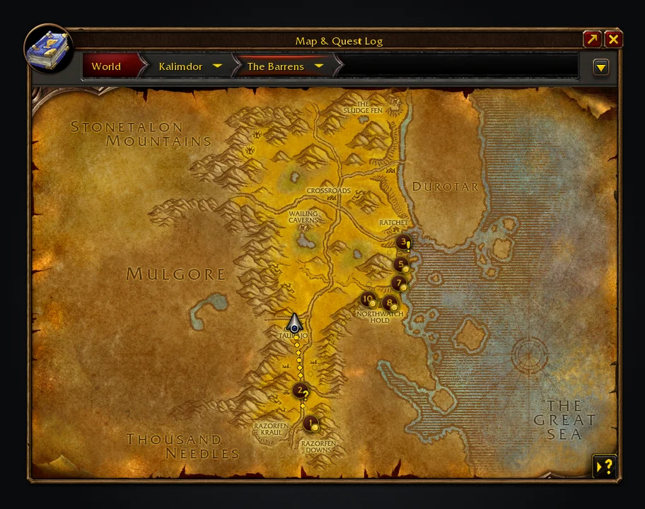
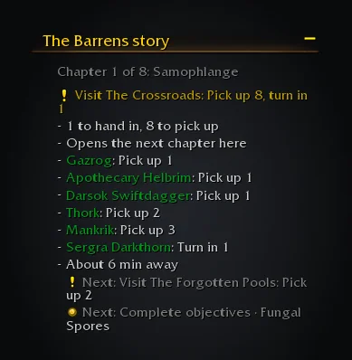

Adventure Guide Forever
Picks quests for your level in WoW: Forever and, with Shortest Path Forever, walks you to each one.
Adventure Guide Forever suggests quests for your level and quest log, in a short route. Each number on the world map is a stop: a pickup, an objective or a hand-in. Shortest Path Forever walks you to each stop, or the game's own waypoint does without it, and the guide can follow RestedXP guides instead.
Install from CurseForge Wago Addons

